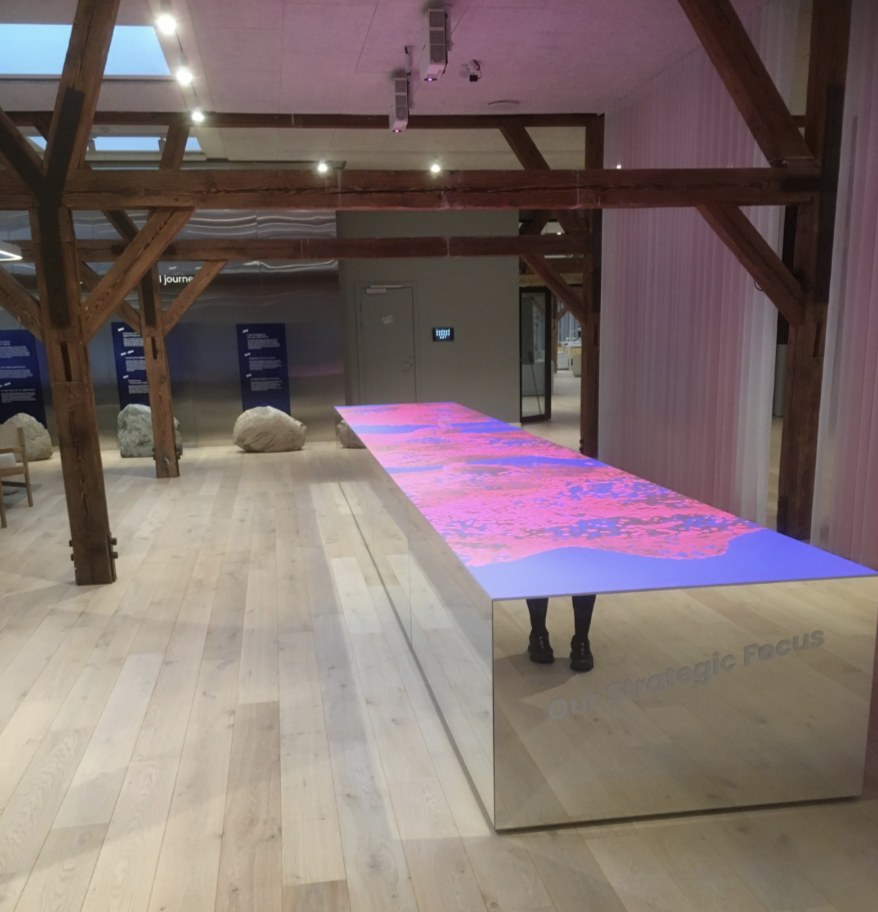

Data sprint
A Timeline of Danish Digitalization
A collaborative data sprint bringing together researchers and practitioners to map and analyse the historical trajectory of Danish public sector digitalization.
Research project · 2023 – 2027
Transnational Collaboration at the Digital Frontier

About the project
Public sector digitalization is increasingly driven by transnational collaboration.
The circulating best practices of digital government have an unacknowledged political character: the process of public digitalization does not just streamline the welfare state but also fundamentally transforms the internal working of the state, as well as the relations to its citizens, the private sector, and other countries.
An STS-informed study, the project theorises public digitalization as a transnational network of artefacts, expertise, and events — and ethnographically follows three countries deeply engaged in knowledge sharing.
Data sprints, symposia and conference panels where the project meets its field.
A collaborative data sprint bringing together researchers and practitioners to map and analyse the historical trajectory of Danish public sector digitalization.
Goldsmiths, University of London. Scholars from STS, software and platform studies, media studies, international relations, political theory and cultural studies in conversation through curated panels.
Hosted by Irina Papazu (ITU), Jessamy Perriam (ITU / ANU) and Nathaniel Tkacz (Goldsmiths, co-host)
Aalborg University, Copenhagen. A Digi-Front panel at the Danish STS conference on how infrastructures are made, maintained, imagined and transformed.
Conference page ↗Associate professor in Technologies in Practice. Studies public sector digitalization in Denmark and abroad ethnographically, and thinks across the subprojects.
Associate professor at ITU and senior lecturer at ANU's School of Cybernetics. Leads the UK case, following how expertise shifts across national contexts.
Assistant professor of digital strategic communication. Works on the digital methods components and the ethnographic studies.
Professor of computational anthropology at DTU Management. Responsible for the digital methods, mapping transnational digitalization on GitHub, Hugging Face and LinkedIn.
Works on the Artefacts work package, mapping code-sharing between government entities on GitHub, Hugging Face and LinkedIn.
Studies how digitalization expertise is valued in everyday professional practice, and how knowledge travels across borders and sectors.